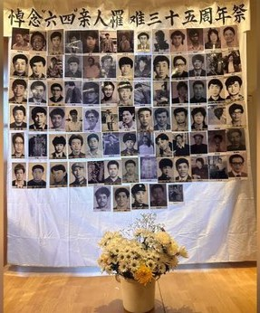
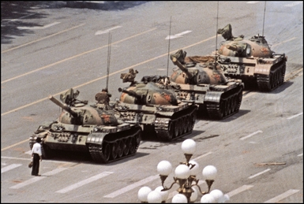

寻觅记忆中的勇士
在5月35日这个特殊时刻，我们心怀着对过去的惦念和对未来的希望。纵然岁月已经流逝，但那段历史上的英雄永远活在我们的记忆之中。或许他们已经消失在岁月的长河中，但我们始终无法忘记他们的勇敢和无畏。
今天，让我们通过寻人启事，寻找呼唤那些当年的学生和工人。他们是那个时代的见证者，是自由与民主的倡导者，是在黑暗中发出的一束光芒，却被镇压与屠杀。我们想念你们，我们永远怀念你们！
曾经，有那么一群青年人，站在历史的十字路口，义无反顾地捍卫着自己的信念。他们或许并不出名，但他们的勇气和坚定铭刻在我们的心中。就像那位孤独的坦克人，他的身影仿佛成了那个时代的象征，他的勇敢演绎了无畏的精神。

在那个动荡的岁月里，有一句话激励着每一个人：“It's my duty！”这句简单而坚定的宣言，彰显了他们对正义和自由的执着追求。他们可能已经消失在岁月的长河，但他们的精神永远不会消逝。
今天，当我们回顾过去，我们不仅仅是在怀念逝去的岁月，更是在呼唤未来的希望。让我们铭记历史，不忘初心，努力奋斗，为建设一个更加美好的社会而努力奋斗。
35年过去了，尽管面对封锁，但历史不会被抹去。让我们怀念当年的抗议者，致敬他们的勇气和牺牲。让我们共同努力，让自由和民主的阳光照耀在每一个角落，让我们的国家成为一个更加公正和美好的地方。这是我们每一个人的责任，也是我们对过去和未来的承诺！